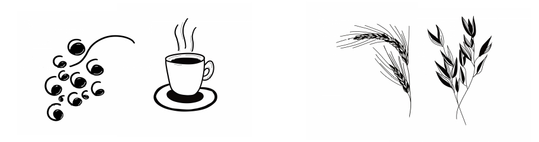
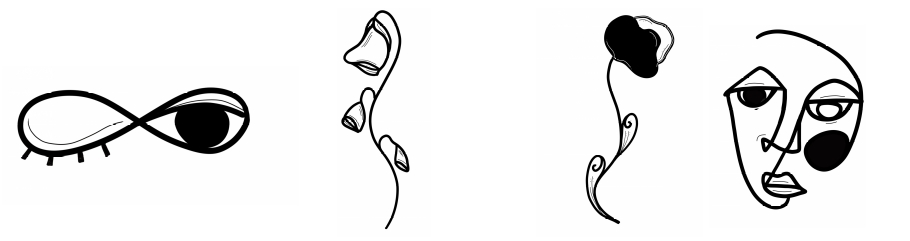

Litteratur kan vara lätt. Om litteraturen är en källa till livskunskap får vi beakta att livet har fler sidor än avigsidor. Viktigast av allt är väl att må bra, allra helst en stund tillsammans med de som betyder mest för oss.
Litterär salong är ett expressivt samtal mellan dig och dina vänner och väninnor tillsammans med en terapeut. Vi träffas i chambre séparée där du och ditt sällskap slår er ner för att samtala om den litteratur vi valt åt er och för tillfället. Samtalet kan ta många riktningar och blir precis så lättsamt och livligt eller djupsinnigt och tankfullt som vi själva vill. Tillsammans fokuserar vi på det gemensamma meningsskapandet när vi artikulerar, lyssnar, kompletterar och nyanserar berättelser och betraktelser.
Innan första träffen möts vi för ett förberedande samtal för att lära känna varandra och tillsammans komma fram till vilken litteratur som passar just dig och din grupp.
Intresseanmälan